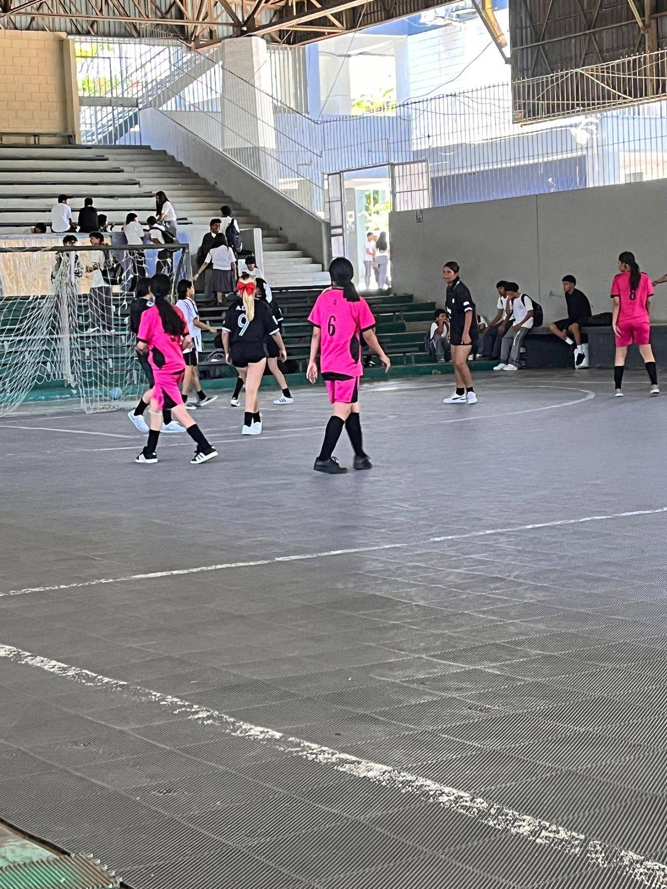

"El deporte es salud"
Palabras del Prof. Manuel Pineda, asistente técnico de las selecciones de fútbol. Once años de historia, seis disciplinas y cientos de estudiantes que han hecho del deporte una segunda casa dentro del instituto.
El área deportiva, en números
Desde 2015 el instituto compite formalmente fuera de sus instalaciones. Esto es lo que ha construido desde entonces.
Cerca de 50 encuentros por año si se suman amistosos y torneos relámpago · Fútbol (masculino y femenino), baloncesto, voleibol, atletismo, ajedrez y tenis de mesa.
De los torneos de recreo a las semifinales
Los primeros cuadros
Los equipos del instituto empiezan a tomar forma a partir de los torneos improvisados de los recreos: el punto de partida de todo lo que vendría después.
El salto a la competencia formal
El instituto empieza a competir oficialmente fuera de sus instalaciones. Arranca la trayectoria competitiva que hoy suma más de una década.
Semifinalistas
El equipo llega a semifinales en el torneo de la Secretaría de Educación y cae por penales ante el equipo que, más tarde, se coronaría campeón.
Nace el fútbol femenino
Todo comenzó con la pregunta de una estudiante: ¿por qué solo los varones podían representar al instituto? De esa inquietud, impulsada por la docencia del área, nace el equipo femenino de fútbol.
Nace la Copa Amistad
El equipo femenino se consolida. De un campeonato disputado en octubre nace la Copa Amistad de Fútbol Femenino, torneo propio del instituto que hoy prepara su tercera edición.

Subcampeones, con la FIFA de testigo
Final cerrada 3-2 en el torneo interinstitucional: subcampeonato con trofeo y medallas para la selección masculina. En ese mismo torneo hubo presencia de personas vinculadas a la FIFA, y un estudiante fue invitado a una prueba con un equipo.
Goleadas, campeonato y cuartos de CODICADER
La selección de bachillerato termina 1ª de grupo en el torneo de la Semana de la Juventud —con goleadas de hasta 9-0— y cae en cuartos por penales ante el Instituto Salesiano San Miguel. La selección femenina se corona campeona del torneo de la Universidad Católica y llega a cuartos de final en CODICADER.
Lo que hemos conquistado
Campeonas — Torneo Universidad Católica
La selección femenina se coronó campeona por encima de centros educativos públicos y privados.
Fútbol femeninoSubcampeones interinstitucionales
Final cerrada 3-2, con trofeo y medallas de plata, en un torneo con presencia de personas vinculadas a la FIFA.
Fútbol masculino · 2025Semifinalistas — Secretaría de Educación
Eliminados por penales ante el equipo que luego se coronaría campeón del torneo.
2018–20191º de grupo — Semana de la Juventud
Bachillerato masculino, con goleadas de hasta 9-0 antes de caer en cuartos de final por penales.
2026Cuartos de final — CODICADER
La selección femenina avanzó hasta los cuartos de final del torneo organizado por la Secretaría de Educación.
2026III Copa Amistad — en preparación
El torneo propio del instituto, nacido en 2024, se prepara para su tercera edición como evento insignia del fútbol femenino escolar.
PróximamenteVarios egresados del instituto han dado el salto al fútbol profesional. La prueba de que el deporte escolar no solo forma equipos: también abre puertas.
El equipo detrás de cada triunfo

Prof. Manuel Pineda
Educación Artística · Asistente técnico de fútbolSu relación con el fútbol nació en la infancia: el balón era, muchas veces, la razón para no faltar a la escuela. Hoy acompaña técnicamente a las selecciones masculina y femenina, y todavía juega en el equipo de profesores del instituto.
"El deporte es salud."
Encargada del equipo femenino
Fútbol femenino · Dirección técnicaImpulsora del fútbol femenino desde sus primeros pasos, después de que una estudiante preguntara por qué solo los varones representaban al instituto. De esa inquietud nació un equipo que hoy compite y gana.
"Ser mujer no debe representar una limitación para participar en el deporte."

Prof. Santiago Fúnez
Educación Física · Colaborador históricoEncargado y referente general del area de deportes de la institucion. Parte fundamental del cuerpo técnico que ha acompañado al fútbol masculino torneo tras torneo, aportando la constancia que llevó al equipo de los recreos hasta las semifinales y el subcampeonato interinstitucional.

Pr. Wilmer Javier Aguilar Domínguez
Colaborador del área deportivaParte del equipo docente que, junto a los profesores Manuel Pineda y Santiago Fúnez, sostiene la preparación de las selecciones de fútbol del instituto.

Subdir. Juan Izaguirre
Subdirección · Logística y transporteDetrás de cada viaje a un torneo hay una gestión de transporte y permisos. El subdirector Izaguirre es quien hace posible que los equipos lleguen a competir fuera del instituto.
Lo que el deporte les ha enseñado
Próximas competencias
Actividad competitiva de febrero a noviembre, con participación aproximadamente mensual.
Fecha estimada de la 3ª edición, organizada por el propio instituto · sujeta a confirmación
Un lugar para cada talento
Fútbol masculino
Ciclo básico y bachillerato · U15/U17 según torneo
Fútbol femenino
Ciclo básico y bachillerato · referente del instituto
Baloncesto
Cuadro representativo institucional
Voleibol
Cuadro representativo institucional
Atletismo
CODICADER y torneos interinstitucionales
Ajedrez y Tenis de Mesa
Se trabajan en Educación Física
¿Cómo se llega a un cuadro deportivo?
La participación es voluntaria. El talento se detecta en las clases de Educación Física, y pertenecer a una selección exige mantener buen rendimiento académico y buena conducta — una condición que da tranquilidad tanto a los padres de familia como a las autoridades del instituto.

Con lo que tenemos, mirando hacia más
Todos los equipos comparten una sola cancha de usos múltiples, de piso rústico, que también recibe los eventos institucionales del año. Los espacios aledaños se aprovechan para las prácticas de atletismo.
Es una instalación honesta, no perfecta — y ese es, precisamente, el punto de partida de lo que viene.
El futuro que se está construyendo
Techado de la cancha
En proceso junto a la municipalidad, para que la lluvia deje de decidir cuándo se juega.
Construcción de graderías
Un espacio digno para que las familias acompañen cada partido de cerca.
Remodelación del salón de usos múltiples
Más espacio para entrenar, premiar y celebrar cada logro del área.
El deporte forma personas, no solo atletas
Todos los grados pueden participar. Estés en el instituto o estés por llegar, hay un cuadro deportivo esperando por vos: solo hace falta ganas de sumarte.
Quiero ser parte del instituto